---
title: New in Simple DNS Plus v. 5.0 - DNS Records module
category: 17
frontpage: false
comments: true
refs: 116,95
created-utc: 2019-01-01
modified-utc: 2019-01-01
---
Faster!
If you have a few thousand zones or more you will notice a BIG difference in the time it takes to startup the "DNS Records" module. Even with 100,000 zones, it is now ready in just a few seconds.
Large zones (thousands of records) also load much faster.
"Active" Zone Templates
The "Quick Zone Wizard" (formerly "Quick Domain Wizard") is template based, and supports multiple templates through a drop-down menu on the Quick button.
Templates can simply be static standard RFC based zone files, but they can also become "active" by adding ASP style tags (<%...%>), VB.NET code, and custom input fields. More details...
SPF-records
So far SPF-records have been served using the TXT-record type, but there is a new (still experimental) dedicated SPF-record type being added to the DNS protocol, which is now supported in Simple DNS Plus v. 5.0.
For backwards compatibility it will be necessary to also supply the same information through TXT-records for the foreseable future, so we have included a feature to automatically synchronize TXT-records.
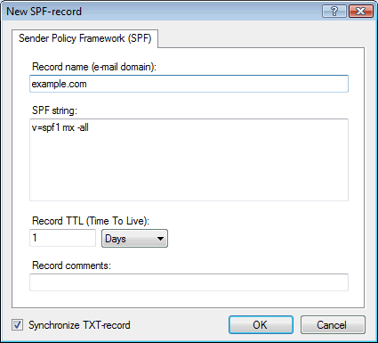
Find Zone function
Easily find and navigate to zones in large zone lists. Has ctrl+F (Find) and F3 (Find Next) ketboard shortcuts.
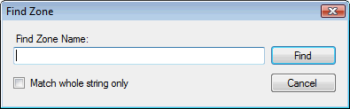
New Export functions
- Export boot file for secondary DNS server
- Export IP addresses to "hosts" or ".csv" file
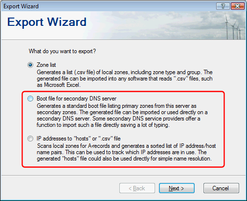
New Bulk Update Wizard functions
4 new bulk update functions have been added, and the Bulk Update Wizard has gotten its own toolbar button:
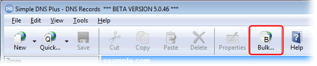
The 4 new bulk update functions are:
1) Find and replace host name:

2) Update DNS record TTL values:
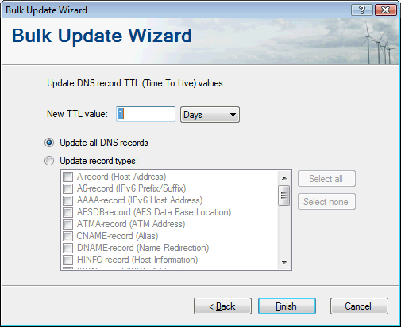
3) Update SOA records:

4) Update zone e-mail servers (MX-records):
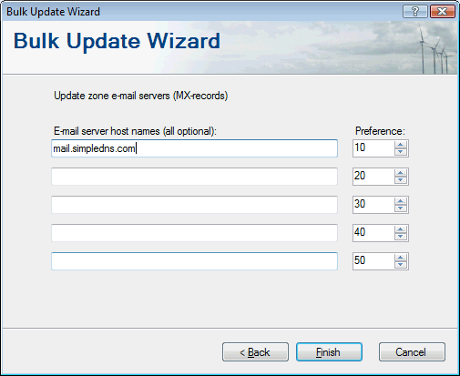
Select zone groups for export / bulk update
For all Export Wizard and Bulk Update Wizard functions, you can now specify which zone groups to export/update:

Automatic Zone Refresh
If you have a zone open (but not changed) in the editor, and the zone file is updated by another process, for example a secondary zone being updated automatically by the server, then the record list will automatically refresh.
So the "Refresh" button is gone.
Zone Folders list
Version 5.0 has a new Zone Folders list separate from the list of zones.
This should make it easier to manage large zone lists, for example drag-dropping zones from one group to another.
The Zone Folders list can be placed either above or to the left of the zone list. Or it can be turned off, in which case all zones are simply listed:
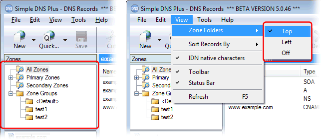
Default Zone Values dialog
New dialog to manage default zone values (available from "Tools" menu):
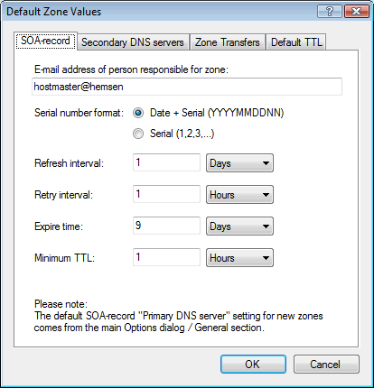
Multi record TTL update and copy/paste/delete
Select any number of DNS records (using shift/ctrl+cursor key combinations), and set their TTL, copy/paste them to another zone, or delete them - in one operation:
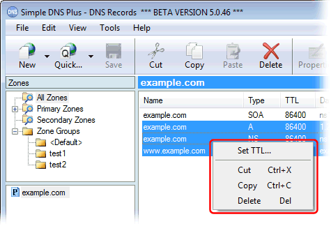
Multi zone move/delete
Select any number of DNS zones (using shift/ctrl+cursor key combinations), and move or delete them in one operation:
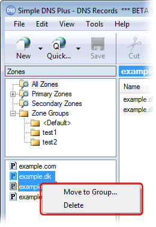
Reload from primary
Right click a secondary zone and select "Reload from Primary", and the current DNS records in the zone will be flushed, and a new copy fetched from the primary server.
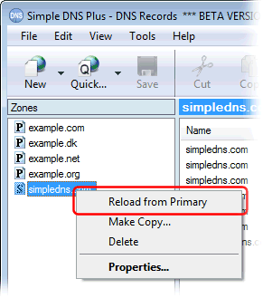
Allow zone transfers from NS-record IPs
New function to automatically fetch and add IP address of zone's NS-records to the zone transfer permission list:
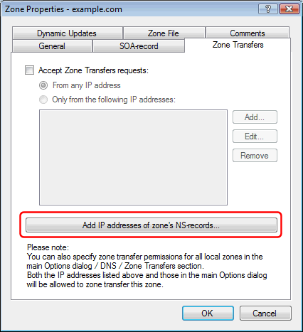
Default TTL for new DNS records
New setting in the Zone Properties dialog:
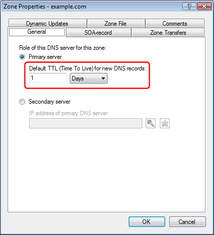
Reverse Zone information panel
For reverse zones, a new information panel appears below the DNS record list.
The "Edit IP-to-Name Mappings" button (formerly "Reverse Zone Wizard") button has been renamed and moved here from the main tool bar to clarify the use of this function.
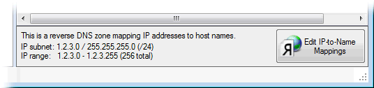
"Save" button and "zone not saved" bar
In version 4.00 and earlier, an updated zone is saved and committed to the DNS engine when either a different zone is selected, the Refresh button is clicked, or the DNS Records window is closed.
This is admittedly not very intuitive and has confused many users.
So in v. 5.0 we have added a "Save" button, and a "zone not saved" information bar:

This however also means that updated zones are no longer saved automatically.
If you try to move to a different zone or close the DNS Records window without saving first, you will be prompted:
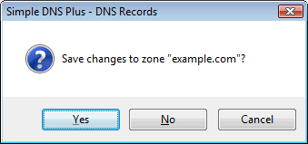
Zone File tab in zone properties dialog
To easier identify a zone's data file.
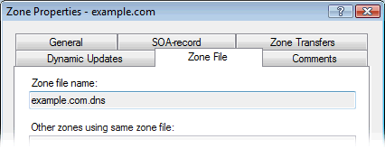
Count Zones function
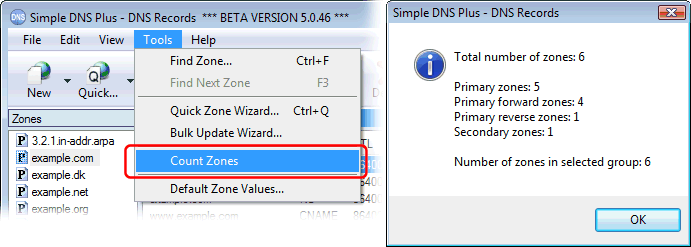